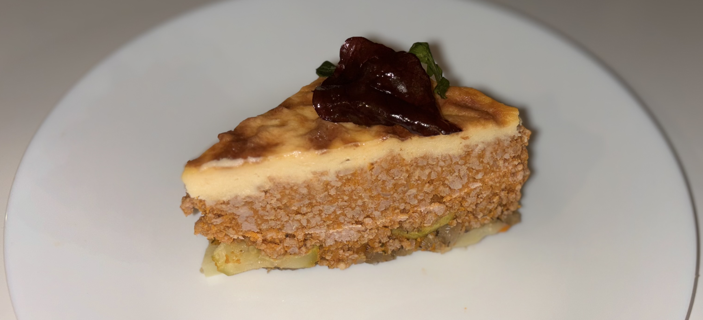

Greek Moussaka

Description
This delicious moussaka takes
2.5h
to prepare but the wait is worth it.
Prep: 35' | Cook: 55' | Servings: 8-10
Ingredients
3 potatoes
2 zucchinis, medium
2 eggplants
2 tablespoon(s) olive oil, for sautéing
500 g ground beef
béchamel sauce
Steps
Place a deep pan over high heat. Add the sunflower oil and let it get hot.
Peel the potatoes and slice them into thin rounds.
Slice the eggplants and zucchini into thin rounds and fry in a separate pan for 5-10 minutes.
Place a pot over high heat and add the olive oil. Add the ground meat and break it up with a wooden spoon. Sauté until golden brown.
Preheat oven to 180* C (350* F) Fan.
In a 25x32 cm baking pan, spread a layer of potatoes, cover with a layer of eggplants and top with a layer of zucchini. Season in between layers.
Add 2-3 tablespoons of béchamel sauce to the ground meat mixture and mix. Spread the ground meat over the vegetables.
Cover with the béchamel sauce, spreading it evenly and sprinkle with 50 g of grated parmesan.
Bake for 35-40 minutes.
When ready, remove from oven and allow to cool.
Serve with fresh herbs and olive oil
Check out more recipes